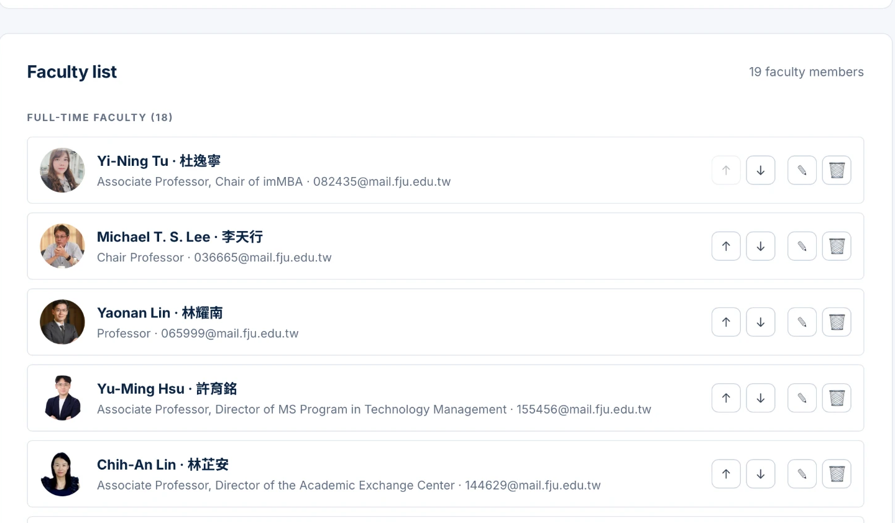

Midterm · Product design review
Redesigning the FJCU imMBA site as a managed digital product
1 · Product concept
Every change to the official site needs a developer, so pages date quickly and the English and Chinese versions drift apart.
One bilingual website for applicants, plus a back office where the program office edits faculty, announcements and alumni.
Staff update content without touching code; every change is attributed, reversible to inspect and protected by roles.
Scope: the public program site and its administration — not the university-wide portal.
FJCU imMBA · Midterm review2 · Target users & needs
International or Taiwanese, deciding where to apply
Posts news, keeps faculty and alumni current
Accountable for what the site says
3 · Requirements
| Who | Key functions |
|---|---|
| Visitor | Browse the program in EN / 中文 · read announcements · search and filter faculty · download forms |
| Admin | Create, edit, delete and reorder faculty, announcements and alumni · upload photos · import and export CSV |
| Super admin | Approve or reject administrators · change roles · read the activity log |
| System | Serve published content only · record every change · enforce permissions in the database |
4 · MVP scope
Cut because they need extra stakeholders (admissions office, alumni consent) rather than extra code.
5 · Product structure
Menu mirrors the official program site, so staff recognise it
| Home | Hero · announcements · figures · program · faculty · downloads |
| About | Overview & ranking · learning environment |
| Admissions | How to apply · tuition & scholarships |
| Curriculum | Courses & requirements · graduation |
| Article pages | One page per long announcement |
Reached from the logo — no public link needed
| Faculty | CRUD · reorder · photos |
| Announcements | Bilingual editor · preview · draft or publish |
| Alumni | CRUD · search · filters · CSV in/out |
| Activity log | Read-only history |
| Administrators | Approve · reject · change roles |
5 · User flow
From Instagram or search
Is the intake open?
Dates, documents, fees
Who teaches my field?
Apply Now → FJCU system
Email + password
Role: pending
Becomes admin
Faculty · news · alumni
Site updates instantly
6 · UI/UX design
The editor shows English and 中文 side by side and warns when one is missing — not two posts that drift apart. One toggle for visitors; no half-translated page.
Degree is a four-value dropdown — Bachelor · Master · Doctoral · Other — enforced again in the database, so "MBA", "M.B.A." and "Master's" cannot split one group into three.
A new account signs in but sees only "waiting for approval". Authentication asks who are you, authorization what may you do — only a super admin grants the second.

6 · UI/UX design
Photo left, labelled details right. Applicants scan for a research field, so Specialties gets a full line rather than being buried in a paragraph.
Full-time / part-time chips at the top: 19 records is too many to read, few enough that search would be overkill.
If the backend is unreachable the page falls back to a bundled copy of the data, so an applicant never meets an empty page.
7 · Data design
Bilingual fields live in the same row; the audit log is written by the database itself, so history cannot be edited from the back office.
FJCU imMBA · Midterm review7 · System design
Browser
Static pages on Vercel
Reads published rows
Signs in at /admin
Same site, gated by role
Database · storage · auth
Updates on next load
The public key ships inside the website. Row level security — not the interface — decides that alumni and the audit log stay private.
Pages stay fast and cheap to host; only the parts that change are fetched. No server to maintain.
Every change is a commit: the site can be rolled back, and content edits never require a deploy at all.
Where it stands
Open question for the review: is CSV the right import format, or should alumni data come from the university system?
fjcu-immba-website-gamma.vercel.app
/admin · roles and activity log
github.com/candelavaron-web/fjcu-immba-website